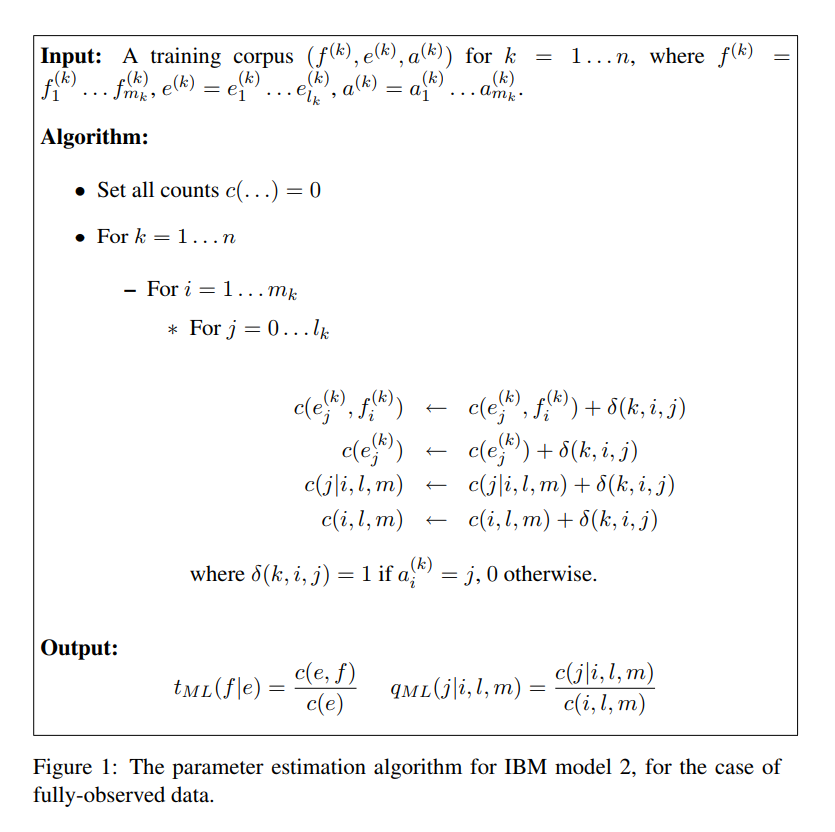

论文地址：http://www.aclweb.org/anthology/N13-1073
这篇文章对IBM Model 2，一种在无监督情况下将双语语料进行对齐的方法进行了改进，提高了计算速度和对齐质量。
IBM Model 2
文章本身很短，但是为了明白文章在讲什么，首先需要搞懂IBM Model 2是什么。这篇文章用Fr-En翻译的例子说明了IBM Model 2的定义和训练方法。
用表示源句中的个词，表示译句中的个词，用表示第个句对。
IBM Model 2是一种Noisy-Channel Approach，也就是说，它的模型分成以下两个部分：
- 语言模型：，表示英语句子在英语中出现的概率
- 翻译模型：，表示在给定译句为的条件下，源句为的概率。
有趣的一点是，翻译模型是而非。（我也不知道为什么）
对齐模型（alignment model）
在翻译模型中加入对齐变量（alignment variables），得到。（上述模型假设已知分布，因此把看作是定值）。其中表示源句中的与译句中的对齐，或者说在概率模型中，是由生成的；表示NULL，如果，说明是由NULL生成的。
（上述“生成”说的是概率模型的生成，并不是实际翻译中的生成。）
IBM-M2模型的正式定义
一个IBM-M2模型包括一个固定的英语词集合，一个固定的法语词集合，以及和，分别表示法语和英语句子的最大长度。模型的参数如下：
- ：表示从英语词生成法语词的概率
- ：英语和法语句子的长度分别为和时，（与对齐）的概率
对于任意英语句子和长度，定义法语句子和对齐变量的条件分布为
在这个模型中我们使用了一些独立性假设。令为表示英语句子长度的随机变量，是表示英语句子中的词的随机变量；是表示法语句子长度的随机变量，和是表示法语句子中的词和对齐的随机变量，则我们的目标是建立一个这样的模型：
可以通过链式法则把上式分解成两项的乘积：
对于第一项，作如下独立性假设：
即对齐变量只与源句和译句的长度有关，和具体的词无关。（显然这只是一种假设）
对于第二项，作如下独立性假设：
即法语词只与和它对齐的英语词有关，和其他词均无关。（显然这只是一种假设）
IBM-M2模型的用途
- 翻译：
- 语言（词法）模型：
- 对齐模型：
其中对齐模型是比较重要的一种用途。
估计IBM-M2模型的参数
数据观测充分的情况
在这种情况下，我们假设训练数据是这样的：。（一般来说，是观察不到的）
这样就可以利用极大似然对参数进行估计：
- ：训练数据中英语词与法语词对齐的次数
- ：训练数据中英语词与任意法语词对齐的总次数
- ：长度为的法语句子中第个词与长度为的英语句子中第个词对齐的次数
- ：训练数据中法语句子长度为，英语句子长度为的总数

数据观测不充分的情况
在这种情况下，我们假设训练数据是这样的：。我们采用EM算法对参数进行估计：
- 首先为各和参数估计一个初始值（比如随机取值）
- 按照当前参数取值统计、、和的值
- 更新各和参数，迭代直到收敛
其中最主要的区别是把原来的
\delta(k, i, j) = 1 \, \text{if} \, a_i^{(k)} = j, 0 \, \text{otherwise}$$（只有确实对齐时才取1，其他时候取0） 换成了 $$\delta(k, i, j) = \frac{q(j | i, l_k, m_k) t(f_i^{(k)} | e_j^{(k)})}{\sum_{j=0}^{l_k} q(j | i, l_k, m_k) t(f_i^{(k)} | e_j^{(k)})}$$（在当前参数下$a_i=j$的概率） 可以证明EM算法是收敛的，但是可能会收敛到局部极小值。所以可以用Model 1对参数进行初始化。详细的内容略。  ## fast align 这一模型采用了IBM-M2模型的基本思路，但是减少了其中的参数个数。按论文中的表示法，这个模型是这样定义的： * 令$n$表示源句长度，$m$表示译句长度，定义两个新的参数$p_0$和$\lambda$ * 令$h(i, j, m, n) = -|\frac{i}{m} - \frac{j}{n}|$ * 令$\delta(a_i = j | i, m, n)$表示源句和译句长度分别为$m$和$n$时，$a_i = j$的概率（相当于之前的$q(j | i, l, m)$） * 令$\theta(e_i | f_{a_i})$表示从英语词$e_i$生成法语词$f_{a_i}$的概率（相当于之前的$t(f | e)$） $$\delta(a_i = j | i, m, n) = \begin{cases} p_0 & j = 0 \\ (1 - p_0) \times \frac{e^{\lambda h(i, j, m, n)}}{Z_{\lambda}(i, m, n)} & 0 < j \leq n \\ 0 & \text{otherwise} \end{cases} $$ 其中$Z_{\lambda}(i, m, n) = \sum_{j'=1}^{n} \exp{\lambda h(i, j', m, n)}$ 这相当于是把原来每组$(i, j, m, n)$都对应一个参数的情况修正成了只通过已知函数$h$和$p_0$、$\lambda$两个参数来确定对齐。其中$p_0$表示的是无对齐的概率 ### 根据参数计算给定句对的最大似然概率和对齐 给定句对$(f, e)$和参数，则： * 译句中第$i$个词为$e_i$，且$e_i$和$f_{a_i}$对齐的概率为：$p(e_i, a_i | f, m, n) = \delta(a_i | i, m, n) \times \theta(e_i | f_{a_i})$ * 译句中第$i$个词为$e_i$的概率为：$p(e_i | f, m, n) = \sum_{j=0}^{n} p(e_i, a_i=j | f, m, n)$ * 因此：$p(e | f) = \prod_{i=1}^{m} p(e_i, a_i=j | f, m, n) = \prod_{i=1}^{m} \sum_{j=0}^{n} \delta(a_i | i, m, n) \times \theta(e_i | f_{a_i})$ 通过一些优化手段，我们可以使$\delta(a_i | i, m, n)$的计算复杂度是$O(1)$的。 --- 显然$\delta(a_i | i, m, n)$的计算瓶颈在于$Z_{\lambda}(i, m, n)$；$Z_{\lambda}(i, m, n)$显然可以在$O(n)$时间复杂度内进行计算，但事实上可以是$O(1)$的。考虑到$h(i, j, m, n) = -|\frac{i}{m} - \frac{j}{n}|$，事实上$Z_{\lambda}(i, m, n)$是两个等比数列的和： * 令$j_{\uparrow} = \lfloor \frac{i \times n}{m} \rfloor$，$j_{\downarrow} = j_{\uparrow} + 1$ * 则$Z_{\lambda}(i, m, n) = \sum_{j'=1}^{j_{\uparrow}} \exp{\lambda h(i, j', m, n)} + \sum_{j' = j_{\downarrow}}^{n} \exp{\lambda h(i, j', m, n)}$ * 其中$\sum_{j'=1}^{j_{\uparrow}} \exp{\lambda h(i, j', m, n)} = e^{\lambda j_{\uparrow}} + e^{\lambda (j_{\uparrow} - 1/n)} + e^{\lambda (j_{\uparrow} - 2/n)} + ...$ * $\sum_{j' = j_{\downarrow}}^{n} \exp{\lambda h(i, j', m, n)} = e^{\lambda j_{\downarrow}} + e^{\lambda (j_{\downarrow} - 1/n)} + e^{\lambda (j_{\downarrow} - 2/n)} + ...$ 因此可以在$O(1)$时间内计算$Z_{\lambda}(i, m, n)$。 ### 根据训练数据计算参数 这一模型也可以通过EM算法来进行训练。$\theta(e_i | f_{a_i})$的更新方法和之前类似，并使用了（一些我看不懂的数学）进行优化；$\lambda$参数则需要用梯度方法来进行更新（另一些我没看懂的数学）。事实上，$\delta(j | i, m, n)$的导数也具有类似的规律性，因此也可以用相同的方法来计算梯度，复杂度比较低。 ## 评价 这个模型能够用无监督且非常快速的方式计算出源句和译句之间的对齐，是一种非常有趣且已经被广泛使用的方法。不过由于模型和方法本身的限制，这个模型的对齐质量仍然不是很高。不过，在NMT方法中我们仍然可以利用这一方法生成的对齐的质量来对训练语料进行初步的预处理。